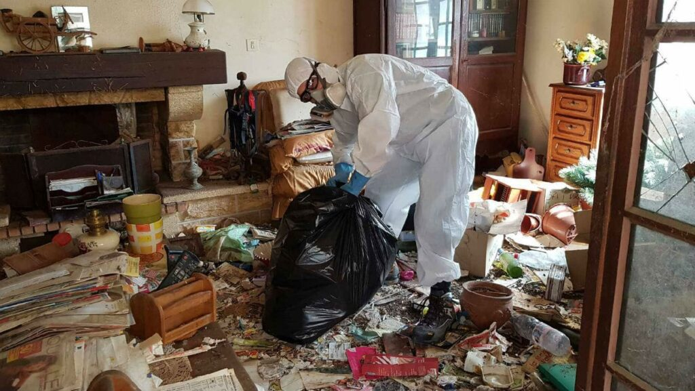

¿Cómo se puede determinar si alguien es realmente un verdadero acumulador compulsivo o si simplemente es desordenado?
Algunas personas dan por sentado sus habilidades organizativas, mientras que otras pueden centrarse en el acaparamiento como "su forma" de mantener las cosas organizadas.

La complejidad del Síndrome de Diógenes es mucho más complicada que simplemente ser incapaz de organizar las cosas. Ser desorganizado significa que alguien tiene dificultades para poner las cosas en el lugar que les corresponde. El comportamiento de acaparamiento es un poco más complejo que eso.
El Síndrome de Diógenes en su forma más verdadera simplemente significa que una persona obtiene y conserva prácticamente todo lo que puede tener en sus manos porque en su mente estos elementos valen, algo más se necesitará en algún momento en el futuro.
El acaparamiento puede ser un síntoma subyacente de otros trastornos. El TOC, conocido como trastorno obsesivo compulsivo, es el más probable. Otros incluyen esquizofrenia, Alzheimer, demencia, trastornos alimentarios como la anorexia. - o puede estar presente por sí solo.
La clasificación del Síndrome de Diógenes como una forma de TOC varía en la comunidad médica. Algunos médicos sienten que es un trastorno obsesivo-compulsivo, mientras que otros creen que es un síndrome en sí mismo, pero conserva las características dentro de la gama de trastornos OC. Por un lado, los acaparadores tienden a ser perfeccionistas, lo que contradice las condiciones de vida que han creado.
¿Puede captar ciertas señales que son una clara indicación de Síndrome de Diógenes ?
La respuesta es sí y no. El hecho de que la persona simplemente tenga una casa descuidada no es suficiente.
Alguien que es un acaparador compulsivo puede no tener control sobre poner un límite a las cosas que ya puede tener. Las compulsiones de acaparamiento compulsivo también incluyen comprar más artículos, revisar su basura o la basura de otros en busca de artículos y / o buscar en circulares para las ventas.
También pueden ser muy posesivos cuando tratan con sus propias posesiones. Alguien que tiene un Síndrome de Diógenes puede sentir la necesidad de hacer un inventario de su "colección" y puede ir tan lejos como para contar los artículos para asegurarse de que tiene suficiente.
Cuando están fuera de casa por un período de tiempo prolongado, incluso pueden contactar a otros para ir a su casa a revisar los artículos.
Las pertenencias de una persona ("desorden") son solo un síntoma del espectro del comportamiento de acaparamiento, lo que significa que el verdadero problema radica en cómo ven sus posesiones.
Hay obsesiones o exageraciones comunes que se encuentran típicamente en aquellos que atesoran, y la mayoría de las veces se basan en un conjunto de miedos. Se puede hacer una generalización sobre el acaparamiento compulsivo.
Se trata de un temor genuino de que la persona se esté quedando sin un objeto en particular en su posesión, por lo tanto, tirar algo no es una opción porque puede ser necesario en algún momento. Un Síndrome de Diógenes también puede apegarse emocionalmente a un artículo hasta el punto en que perderlo o tirarlo a la basura es insoportable.
Esta es la razón por la que los acaparadores harán varias pilas de sus artículos o simplemente se negarán a deshacerse de ellos. Fuera de la vista no está fuera de la mente en estos casos.
Al evitar la idea de tener que tomar una decisión sobre si conservar un artículo en particular o descartarlo, la lucha mental no entra en juego. Se evita el miedo a cometer un error.
Luego está el valor sentimental que podría tener un artículo en particular. Puede recordarle a la persona a alguien o algo cercano a él, por lo tanto, es agradable tenerlo en todo momento.
Si el Síndrome de Diógenes está controlando, se puede identificar la base del problema. Es posible que simplemente sientan que al controlar su entorno, es decir, sus posesiones, tienen el control total de su vida.